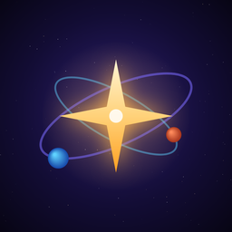

JHHHGAMESTérminos del servicio de Fusión Estelar
Última actualización: 14 de noviembre de 2026
Estos términos explican las reglas para usar Fusión Estelar, un juego publicado por JHHHGAMES, desarrollador independiente de Costa Rica (en adelante, "nosotros"). Al descargar o jugar Fusión Estelar aceptas estos términos. Si no estás de acuerdo, no uses el juego.
Quién puede jugar
El juego está pensado para personas de 13 años o más. Si eres menor de edad según las leyes de tu país, necesitas el permiso de tu madre, padre o tutor para hacer compras.
El juego y tu progreso
Te damos un permiso personal, no exclusivo y revocable para usar el juego en tus dispositivos, solo para entretenimiento y sin fines comerciales. Tu progreso se guarda en tu teléfono y, si lo eliges, en la nube con tu cuenta de Google o Apple, como explica la política de privacidad. Podemos actualizar, cambiar o equilibrar el juego (por ejemplo, precios en polvo estelar, metas o recompensas) para mejorarlo.
Polvo estelar y compras dentro del juego
- El polvo estelar, la masa estelar, los fondos y demás artículos del juego son contenido virtual. No son dinero, no tienen valor fuera del juego y no se pueden cambiar por dinero real, transferir ni vender.
- Las compras las procesa Google Play o la App Store, con sus propias condiciones de pago. Nosotros no vemos los datos de tu tarjeta.
- Las compras son de contenido digital que se entrega al instante. Los reembolsos se gestionan según las reglas de Google Play o de la App Store y las leyes de protección al consumidor de tu país. Si tienes un problema con una compra, escríbenos y te ayudamos.
- Si no usas el guardado en la nube y borras el juego o cambias de teléfono, el contenido virtual guardado solo en ese teléfono puede perderse.
Anuncios
El juego es gratis y se financia con anuncios de Google AdMob. Algunos anuncios son opcionales y te dan premios dentro del juego si los ves completos. El contenido de los anuncios es responsabilidad de quienes los publican.
Uso correcto
No está permitido:
- Hacer trampa, modificar el juego, usar programas para alterar el progreso o aprovechar errores a propósito.
- Copiar, descompilar, revender o distribuir el juego o sus partes.
- Elegir un apodo ofensivo, que suplante a otra persona o que viole derechos de otros.
Si no cumples estas reglas, podemos quitar el contenido obtenido de forma indebida o cerrar tu acceso al guardado en la nube.
Propiedad intelectual
El nombre Fusión Estelar, el diseño del juego, los gráficos, las animaciones, los textos y el código pertenecen a JHHHGAMES o a sus licenciantes. Estos términos no te dan ningún derecho sobre ellos, salvo el permiso para jugar.
Garantías y responsabilidad
Ofrecemos el juego "tal cual". Hacemos lo posible para que funcione bien, pero no garantizamos que esté siempre disponible ni libre de errores. En la medida que lo permita la ley, no somos responsables de daños indirectos por el uso del juego. Nada de esto limita los derechos que te dan las leyes de protección al consumidor de tu país.
Fin del servicio
Podemos dejar de ofrecer el juego o el guardado en la nube. Si lo hacemos, avisaremos dentro del juego con al menos 30 días de anticipación cuando sea posible.
Cambios en estos términos
Si cambiamos estos términos, actualizaremos la fecha de arriba. Si el cambio es importante, lo avisaremos dentro del juego.
Ley aplicable
Estos términos se rigen por las leyes de Costa Rica, sin perjuicio de los derechos que te den las leyes de tu país de residencia.
Contacto
Para preguntas, problemas con compras o reclamos escribe a scorpionjmna@gmail.com.